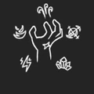
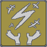

Издатели: Ragoozer, Arch_Mage, Melon_Sensei, Dexerius, K1LLUAA, yayafino и др.
О Deepwoken
Deepwoken - многопользовательская приключенческая игра, созданная на базе Roblox, обладает элементами Rogue-like и Soul-like. В игре персонажи не могут жить вечно из-за системы "Вайпа", при которой полностью теряется прогресс на персонаже.
Вооружение
В deepwoken есть 3 типа оружия: лёгкое, среднее, тяжёлое и их под типы.


Элементы
Также в игре присутствует 6 видов магии "attunements": ветер, огонь, метал, молния, лёд и тьма. Каждый из элементов имеет свои пути, которые изменяют их базовые механики и цвет.
| attunements | |||||
| Flame | shadow | ice | Iron | thunder | wind |
| Twisted puppet | Crystal | Scrap | Surge | Spectral | |
| Azure | X |  |
 |
 |
 |
 |  |